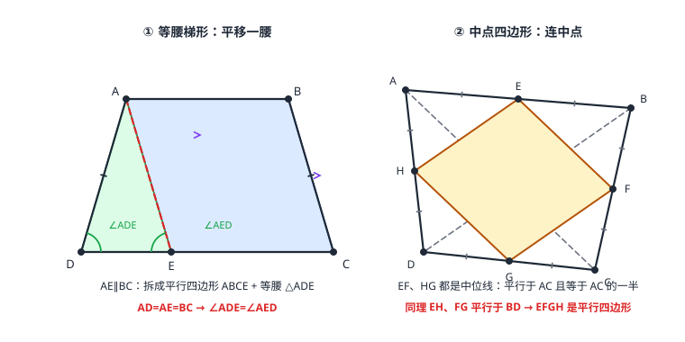

梯形与中点四边形
只有一组对边平行的四边形叫梯形，平行的两边是底，不平行的两边是腰；等腰梯形同一底上两角相等、两条对角线相等。梯形题的第一反应是作辅助线：平移一腰、平移对角线、作双高——把梯形拆成平行四边形 + 三角形。任意四边形四边中点顺次相连，必得平行四边形：每条边都是某条对角线的一半，且与它平行。
| 所属主题 | 四边形 |
|---|---|
| 所属模块 | 几何 |
| 课标学段 | 第四学段（7~9 年级） |
| 前置知识 | 全等三角形、三角形的中位线、平行四边形 |
| 核心素养 | 推理能力几何直观模型观念 |
教材定位
人民教育出版社《人教版（2024版）义务教育教科书·数学》
八年级下册第21章 四边形21.1 四边形及多边形21.2 平行四边形
落在八下 21.1 与 21.2。梯形在教材中不单列，本篇以中点四边形与中位线为主线，把它作为平行四边形家族的对偶面来组织；中点四边形属教材未展开的拓展内容。
说明
梯形：只有一组对边平行的四边形（另一组不平行，这条限制把它和平行四边形划开）。平行的两边叫底（上底、下底只是位置称呼，与长短无关），不平行的两边叫腰。两腰相等的梯形叫等腰梯形；一腰垂直于底的梯形叫直角梯形。
等腰梯形三件宝：两腰相等；同一底上两个角相等；两条对角线相等。判定走「同一底上两角相等」即可回到等腰。它的证明与计算几乎全靠辅助线「拆」：平移一腰、平移一条对角线、从上底两端作双高——三种拆法都把梯形拆成「平行四边形 + 三角形」，把没学过的图形化归成学过的零件。
中点四边形：顺次连接任意四边形各边中点所得的四边形，必定是平行四边形。原因是中位线接力——E、F 是 \triangle ABC 两边中点，EF 是中位线，EF\parallel AC 且 EF=\tfrac12 AC；H、G 是 \triangle DCA 两边中点，HG\parallel AC 且 HG=\tfrac12 AC——EF\parallel HG 且 EF=HG，同理 EH\parallel FG。原四边形形状再歪，结论不倒（图 1 右）。
使用场景
堤坝与沟渠截面：堤坝、水沟的横断面是梯形（上宽下窄）——上底加下底折半得「平均宽度」，乘深（高）即截面积，工程土方量按此估算，这是梯形中位线的日常岗位。
裁剪下料：四边形布料不规整，连四边中点裁出一个规整的平行四边形内芯——无论外沿怎么歪，内芯必是平行四边形；若原对角线相等，内芯四边相等，升级成菱形。
注意点
「另一组对边不平行」是定义的一部分：只说「一组对边平行」时，平行四边形也被包含在内。判定等腰梯形、用梯形性质前，先确认它不是平行四边形。
「同一底上两角相等」不是「对角相等」：等腰梯形的 \angle A 与 \angle B（都在上底）相等、\angle C 与 \angle D（都在下底）相等，但 \angle A 与 \angle D 是邻角，只能互补。
中点四边形的边对应的是原四边形的对角线（不是边）：EF=\tfrac12 AC 对的是对角线 AC。原对角线相等 → 中点四边形四边相等（菱形）；原对角线互相垂直 → 中点四边形出直角（矩形）。
证明

图 1：左——平移一腰 AE∥BC，等腰梯形拆成平行四边形 ABCE + 等腰三角形 ADE；右——EFGH 是中点四边形，EF、HG 都平行于 AC，EH、FG 都平行于 BD，故 EFGH 是平行四边形
证明
结论 1等腰梯形在同一底上的两个角相等。
证「等腰 → 同一底上两角相等」用平移一腰：过 A 作 AE\parallel BC 交 DC 于 E（图 1 左）。AB\parallel EC（E 在 DC 上），加上 AE\parallel BC——两组对边分别平行，ABCE 是平行四边形，故 AE=BC。又等腰梯形 AD=BC，于是 AD=AE，\triangle ADE 是等腰三角形，底角相等：\angle ADC=\angle AED；而 AE\parallel BC、DE 与 DC 共线，\angle AED 与 \angle BCD 是同位角（相交线与平行线）——\angle ADC=\angle BCD，同一底上两角相等。
关键一步依据是「平移一腰」把梯形拆成平行四边形加三角形：AB\parallel EC 与 AE\parallel BC 给出两组对边分别平行，ABCE 是平行四边形，AE=BC；等腰梯形 AD=BC 于是 AD=AE，\triangle ADE 等腰、底角相等；最后 AE\parallel BC 且 DE 与 DC 共线，\angle AED 与 \angle BCD 是同位角，角才落到下底上。
结论 2同一底上两角相等的梯形是等腰梯形（AD=BC）。
证「同一底上两角相等 → 等腰」用双高：设 \angle ADC=\angle BCD（同在下底 DC 上）。过 A、B 作 AE\perp DC、BF\perp DC，垂足 E、F。两条高互相平行、夹在平行的上下底之间，AE=BF（平行线之间的距离处处相等）。直角 \triangle ADE 与 \triangle BCF 中：\angle AED=\angle BFC=90^\circ、\angle ADE=\angle BCF（已知）、AE=BF——AAS，\triangle ADE\cong\triangle BCF，得 AD=BC。
关键一步依据有两条：一是平行线之间的距离处处相等，给出 AE=BF（两条高互相平行又都夹在平行的上下底之间）；二是直角三角形的两个锐角互余，给出 \angle AED=\angle BFC=90^\circ。加上已知的 \angle ADE=\angle BCF，AAS 的条件齐了，全等的对应边给出 AD=BC。
结论 3等腰梯形的两条对角线相等。
证对角线相等（等腰梯形）：\triangle ABD 与 \triangle BAC 中，AD=BC（等腰）、\angle DAB=\angle CBA（同一底 AB 上两角相等）、AB 公共——SAS，\triangle ABD\cong\triangle BAC，对应边 BD=AC。
关键一步依据是 SAS：AD=BC 用等腰梯形的定义，\angle DAB=\angle CBA 用同底上两角相等，AB 是公共边——两腰及其夹角对应相等，位置正好对上。条件凑齐才能全等，全等的对应边给出 BD=AC。
结论 4顺次连接四边形各边中点所得的四边形是平行四边形。
中点四边形是平行四边形：见「说明」第 3 段的中位线接力——两对中位线分别平行且等于同一条对角线的一半，EF\parallel HG 且 EF=HG（一组对边平行且相等，平行四边形 判定②）即得平行四边形。
关键一步依据是中位线定理（三角形的中位线）加上 平行四边形 的判定②：两对中位线分别平行于同一条对角线、且都等于该对角线的一半，于是 EF\parallel HG 且 EF=HG，正好是「一组对边平行且相等」，所以中点四边形是平行四边形。
结论 5梯形的中位线平行于两底，且等于两底之和的一半。
梯形中位线（E、F 分别是腰 AD、BC 的中点）：连接 DF 并延长，交 AB 的延长线于 G。\triangle DCF 与 \triangle GBF 中：CF=BF（F 是 BC 中点）、\angle DFC=\angle GFB（对顶角）、\angle DCF=\angle GBF（DC\parallel AB，同位角）——ASA，\triangle DCF\cong\triangle GBF，得 DC=GB、DF=GF。于是在 \triangle DAG 中，E 是 AD 中点、F 是 DG 中点——EF 是中位线（三角形的中位线）：EF\parallel AG（即平行于两底）且 EF=\tfrac12 AG=\tfrac12(AB+BG)=\tfrac12(AB+DC)，两底和的一半。
关键一步依据是「补一个三角形」：延长 DF 交 AB 的延长线于 G，梯形被补成 \triangle DAG，E、F 恰是它两条边上的中点，于是 EF 是这个三角形的中位线（三角形的中位线），给出 EF\parallel AG 与 EF=\tfrac12 AG。而 AG=AB+BG、BG=DC 来自 ASA 全等得到的 DC=GB，所以结果是两底和的一半。
动手实验
任意画一个四边形（越歪越好），量出四边中点并顺次连线；用直尺比对：连线段分别与两条对角线平行，长度恰是对应对角线的一半。换一个有直角的、一个对角线相等的四边形再试——中点四边形先后变成矩形与菱形（角/边被原对角线「传染」）。
解题思路
梯形计算三板斧（辅助线口诀：平移腰、平移对角线、作双高）：求腰长/角用平移一腰（拼出等腰三角形或平行四边形）；求对角线关系用平移对角线；求高与面积用双高（把两腰的「斜」化成两个直角三角形）。
等腰梯形已知量分配：下底比上底多出的部分被两条高均分（等腰时左右各半）——设腰为斜边、半差与高作直角边，勾股求未知量。
中点四边形问题先盯原对角线：中点四边形的每条边 = 原对应对角线的一半。问周长 → 原两条对角线之和；问形状 → 看原对角线是否相等（菱形）、是否垂直（矩形）。
按场景的例题
例 1（场景：测量与工程） 水渠截面
等腰梯形水渠截面，上底宽 8 米，下底宽 14 米，深（高）4 米。求截面两腰的长度与周长。
解：下底比上底长 14-8=6（米），等腰梯形被双高均分，每侧水平段 6÷ 2=3（米）。腰 =\sqrt3^2+4^2=\sqrt9+16=\sqrt25=5（米）（勾股，直角三角形与勾股定理）。周长 =8+14+5+5=32（米）。
答：两腰各长 5 米，截面周长 32 米。
例 2（场景：图形设计） 布料内芯
一块四边形布料，两条对角线分别长 12 分米和 16 分米。顺次连接四边中点裁出一个四边形：它的形状是什么？周长是多少？若原布料两条对角线互相垂直，裁出的四边形又是什么？
解：中点四边形每条边等于原对应对角线的一半：EF=HG=\tfrac12× 12=6（分米），EH=FG=\tfrac12× 16=8（分米）——四边不全相等，但 EF\parallel HG、EH\parallel FG，是平行四边形；周长 =2×(6+8)=28（分米）。若原对角线互相垂直：中点四边形相邻两边分别平行于两条互相垂直的对角线，相邻两边夹角 90^\circ——平行四边形升级成矩形（邻边 6 与 8）。
答：平行四边形，周长 28 分米；对角线互相垂直时是矩形。
例 3（场景：生活优化） 堤坝土方
梯形堤坝截面，上底 3 米，下底 9 米，高 4 米。用梯形中位线估算截面积，并说明中位线为什么恰好是「平均宽度」。
解：中位线 =\tfrac12(3+9)=6（米），即上底与下底的平均值。截面积 = 中位线 × 高 =6× 4=24（平方米）。道理：\tfrac12(a+b)× h 与 \tfrac(a+b)2h 是同一个式子——梯形面积公式本就等于「平均宽 × 深」，中位线把这个平均数变成了看得见的线段。
答：中位线 6 米，截面积 24 平方米；中位线长度即上下底的平均宽度。
常用推论
梯形中位线是三角形中位线的「拼装版」：它同时平行于上底与下底，且 =\tfrac12(上底+下底)——上底缩为一点（=0）时退化为三角形中位线。
中点四边形把「对角线的性质」复印到「边」上：对角线相等 → 边全等（菱形）；对角线互相垂直 → 角为直角（矩形）；两样都占 → 正方形。原四边形的边反而与此无关。
等腰梯形对角线相等这一性质常与平移对角线组合：平移后出现等腰三角形，其底 = 两底之和、腰 = 对角线——是「已知两底与腰求对角线」的标准通道。
易错点
错把梯形的「上底」理解为一定比下底短的「较短底」。
为什么错上、下底按位置区分，不按长短；画倒过来的梯形时上底可以更长。
正确平行的一组对边按位置称上底、下底，与长度无关。
错等腰梯形性质记成「对角相等」。
为什么错与平行四边形混淆；等腰梯形的相等角成对出现在同一底上。
正确同一底上两角相等（\angle A=\angle B，\angle C=\angle D），邻角互补。
错求中点四边形周长时把原四边形的边长代入。
为什么错中点四边形的边由原对角线决定（各为其半），与原边长无直接关系。
正确周长 = 原两条对角线长度之和。
直观理解
梯形是「半路出家」的平行四边形：只有一组对边肯合作。想驯服它，就借外援——平移一腰（凑出平行四边形+等腰三角形）、平移对角线（凑出等腰三角形）、作双高（凑出直角三角形），三种外援都是把「没学过的图形」拆成「学过的零件」。中点四边形则像给任意四边形做「缩印」：四条中位线各取对角线的一半并与之平行，不管外框多歪，印出来的永远是平行四边形——原对角线的脾气（等长、垂直）原样传给它的边与角。